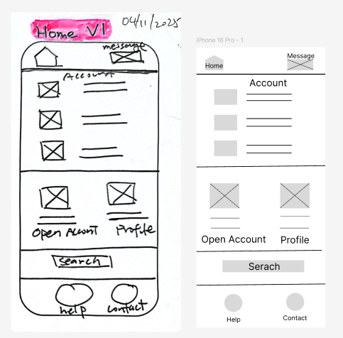
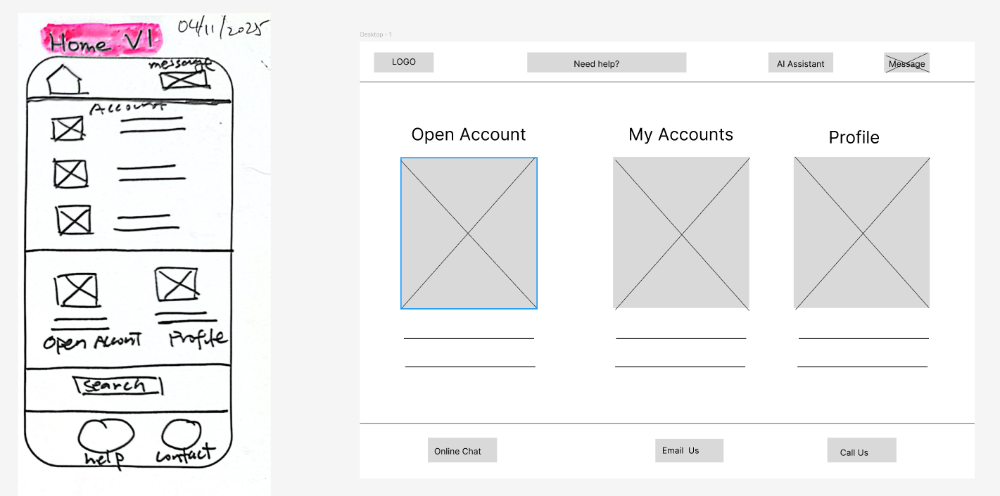
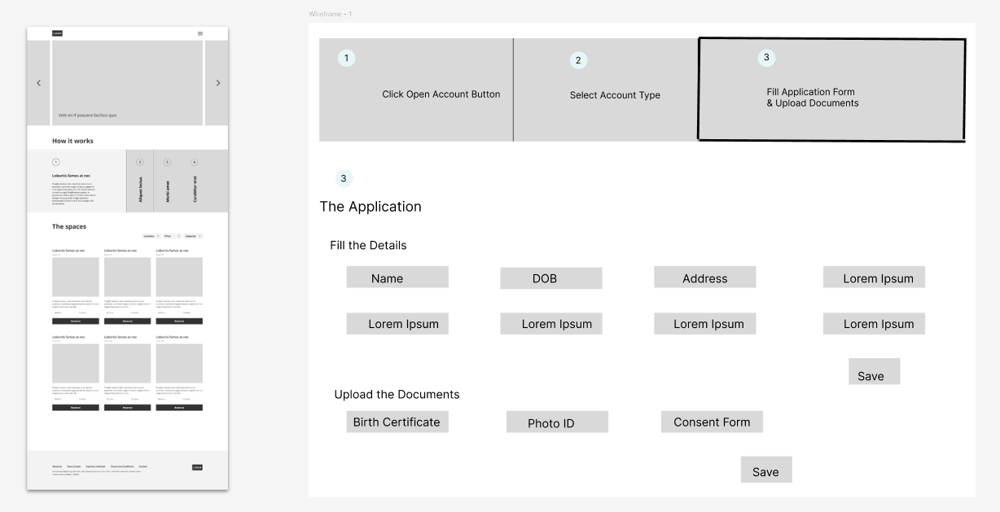
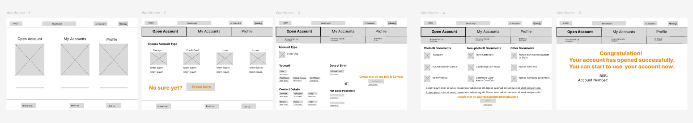
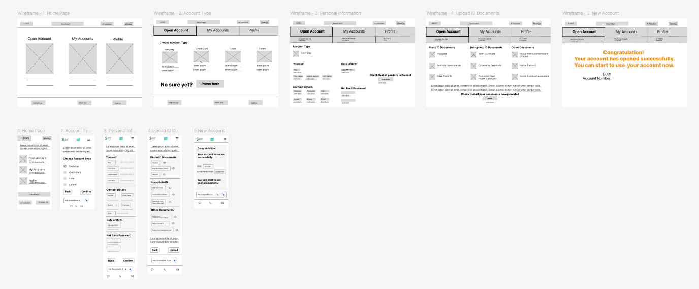
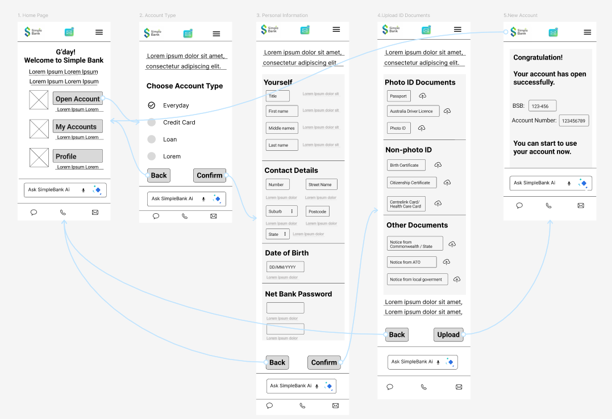

The very frist LOFI
When I'm tackling my project, I always go back to the Coursera course—I might even read or watch some parts a few times. This review is constructive, including the optional parts. It makes me think of the Chinese saying, "Sharpening the axe doesn't delay the chopping." That phrase really fits how I learn. Basically, no matter how much I want to start making the LOFI, I know I need to spend time learning how to create wireframes, thinking through the logical flow, and mastering Figma first. This takes me more than one week, and it's worth it.





